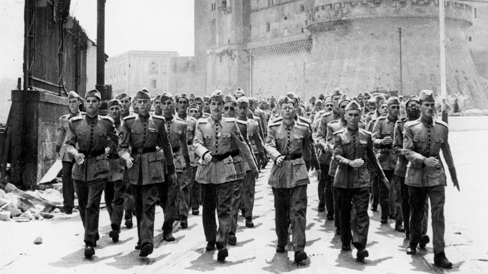
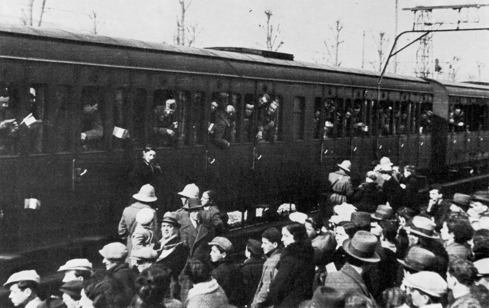

Segunda Guerra: Conflito Global Devastador

Segunda Guerra Mundial foi um conflito militar global que durou de 1939 a 1945, envolvendo a maioria das nações do mundo incluindo todas as grandes potências organizadas em duas alianças militares opostas: os Aliados e o Eixo. Foi a guerra mais abrangente da história, com mais de 100 milhões de militares mobilizados. Em estado de "guerra total", os principais envolvidos dedicaram toda sua capacidade econômica, industrial e científica a serviço dos esforços de guerra, deixando de lado a distinção entre recursos civis e militares. Marcado por um número significante de ataques contra civis, incluindo o Holocausto e a única vez em que armas nucleares foram utilizadas em combate, foi o conflito mais letal da história da humanidade, que resultou na morte de 50-70 milhões de pessoas.
Geralmente considera-se o ponto inicial da guerra como sendo a invasão da Polônia pela Alemanha Nazista em 1 de setembro de 1939 e subsequentes declarações de guerra contra a Alemanha pela França e pela maioria dos países do Império Britânico e da Commonwealth. Alguns países já estavam em guerra nesta época, como Etiópia e Reino de Itália na Segunda Guerra Ítalo-Etíope e China e Japão na Segunda Guerra Sino-Japonesa.[2] Muitos dos que não se envolveram inicialmente acabaram aderindo ao conflito em resposta a eventos como a invasão da União Soviética pelos alemães e os ataques japoneses contra as forças dos Estados Unidos no Pacífico em Pearl Harbor e em colônias ultra marítimas britânicas, que resultaram em declarações de guerra contra o Japão pelos Estados Unidos, Países Baixos e o Commonwealth Britânico
A guerra terminou com a vitória dos Aliados em 1945, alterando significativamente o alinhamento político e a estrutura social mundial.[wikipedia]
Importância da Segunda Guerra
"Prezado Professor, sou sobrevivente de um campo de concentração. Meus olhos viram o que nenhum homem deveria ver. Câmaras de gás construídas por engenheiros formados. Crianças envenenadas por médicos diplomados. Recém-nascidos mortos por enfermeiras treinadas. Mulheres e bebês fuzilados e queimados por graduados de colégios e universidades. Assim tenho minhas suspeitas sobre a Educação. Meu pedido é: ajude seus alunos a tornarem-se humanos. Seus esforços nunca deverão produzir monstros treinados ou psicopatas hábeis. Ler, escrever e saber aritmética só são importantes se fizerem nossas crianças mais humanas."[Pensador]
"Essa estimativa de 25%", ele afirmou, "se mantém até mesmo para soldados bem treinados e com experimentados. O que significa que 75% não vai disparar ou não vai persistir em disparar contra o inimigo e seu trabalho. Esses homens podem estar sob perigo, mas não vão disparar"[BBC Brasil]
Causas da Segunda Guerra Mundial im
A Segunda Guerra Mundial teve como grande causa o expansionismo e o militarismo da Alemanha Nazista. Essa postura da Alemanha refletia diretamente a ideologia dos nazistas, que haviam alcançado o poder da Alemanha em 1933. A ação dos nazistas resultava, em grande parte, da insatisfação de uma parte radicalizada da sociedade alemã com o desfecho da Primeira Guerra Mundial. Ao final da Primeira Guerra Mundial, consolidou-se fortemente na sociedade alemã uma ideia de que a derrota na guerra havia sido injusta. Somado a isso, havia também a grande humilhação que a Alemanha sofreu com o Tratado de Versalhes, acordo que pôs fim à Primeira Guerra e que proibia a Alemanha de ter navios e aviões de guerra, limitou ao número de 100 mil os soldados de infantaria, obrigou a nação alemã a pagar uma indenização altíssima e a entregar suas colônias para aqueles que a derrotaram. Para piorar, na década de 1920, durante a República de Weimar, a Alemanha encarou uma crise econômica duríssima, que levou o país à falência. Essa crise foi agravada com a Crise de 1929, que, por sua vez, reforçou a crise da democracia liberal e fomentou movimentos autoritários e fascistas pela Europa. O fascismo italiano e o nazismo alemão são os grandes exemplos. Os nazistas ocuparam o poder da Alemanha em 1933, e Adolf Hitler, o líder do partido nazista, iniciou uma campanha de recuperação da Alemanha, de doutrinação da população e de perseguição às minorias. A Alemanha, ao recuperar a sua economia, partiu para o rearmamento um desafio claro às determinações do Tratado de Versalhes. Franceses e ingleses nada fizeram, pois temiam que um desafio aos alemães poderia levar a Europa a uma nova guerra, experiência essa que queriam evitar ao máximo. À medida que a Alemanha fortaleceu-se militarmente, Hitler deu início ao seu expansionismo territorial. A ideia dele era construir o lebensraum, o “espaço vital” que os nazistas tanto almejavam. Esse conceito consistia basicamente em formar um império para a Alemanha em territórios que historicamente haviam sido ocupados por germânicos. Esse era o Terceiro Reich, um império dedicado exclusivamente para os arianos (ideal de raça pura dos nazistas) e que sobreviveria à custa da exploração dos eslavos. O expansionismo germânico ocorreu em três momentos distintos. Inicialmente foi realizada a invasão e anexação da Áustria, evento conhecido como Anschluss e que ocorreu em 1938. Em 1939, os alemães manifestaram o interesse de invadir e anexar os Sudetos, região da Checoslováquia. Após negociações conduzidas por britânicos e franceses, os alemães tiveram autorização para anexar os Sudetos (acabaram anexando quase toda a Checoslováquia). Por fim, veio a Polônia. Esse país do Leste Europeu havia surgido ao final da Primeira Guerra Mundial em territórios que anteriormente pertenciam aos alemães e aos russos. A retórica de Hitler contra os poloneses endureceu-se em meados de 1939. A invasão da Polônia, no entanto, não seria aceita por ingleses e franceses. Ambos os países haviam exigido de Hitler, durante a Conferência de Munique, que suas ambições territoriais encerrassem-se na Checoslováquia. Hitler, no entanto, não esperava que ingleses e franceses fossem reagir aos seus movimentos. Em 1º de setembro, ordenou a invasão da Polônia utilizando como justificativa um suposto ataque polonês na fronteira com a Alemanha (o ataque foi forjado pelos nazistas). Dois dias depois, britânicos e franceses responderam à agressão alemã contra a Polônia com uma declaração de guerra. Esse foi o início da Segunda Guerra Mundial.
Eventos pré-guerra

A Segunda Guerra Ítalo-Etíope foi uma breve guerra colonial, que começou em outubro de 1935 e terminou em maio de 1936. A guerra foi travada entre as forças armadas do Reino da Itália (Regno d'Italia) e as forças armadas do Império Etíope (também conhecido como Abissínia). A guerra resultou na ocupação militar da Etiópia e na sua anexação à recém-criada colônia da África Oriental Italiana (Africa Orientale Italiana ou AOI); além disso, expôs a fraqueza da Liga das Nações como uma força de manutenção da paz. Tanto a Itália quanto a Etiópia eram países membros da organização, mas a Liga não fez nada quando a guerra claramente violou o seu Décimo Artigo da Convenção.[32] Guerra Civil Espanhola (1936–1939) Ver artigo principal: Guerra Civil Espanhola As ruínas de Guernica, Espanha, após os bombardeios. A Alemanha e a Itália deram apoio à insurreição nacionalista liderada pelo general Francisco Franco na Espanha. A União Soviética apoiou o governo existente, a República Espanhola, que apresentava tendências esquerdistas. Ambos os lados usaram a guerra como uma oportunidade para testar armas e táticas melhores. O bombardeio de Guernica, uma cidade que tinha entre 5 000 e 7 000 habitantes, foi considerado um ataque terrível, na época, e usado como uma propaganda amplamente difundida no Ocidente, levando a acusações de "atentado terrorista" e de que 1 654 pessoas tinham morrido no bombardeio.[33] Na realidade, o ataque foi uma operação tática contra uma cidade com importantes comunicações militares próximas à linha de frente e as estimativas modernas não rendem mais de 300-–400 mortos no fim do ataque.